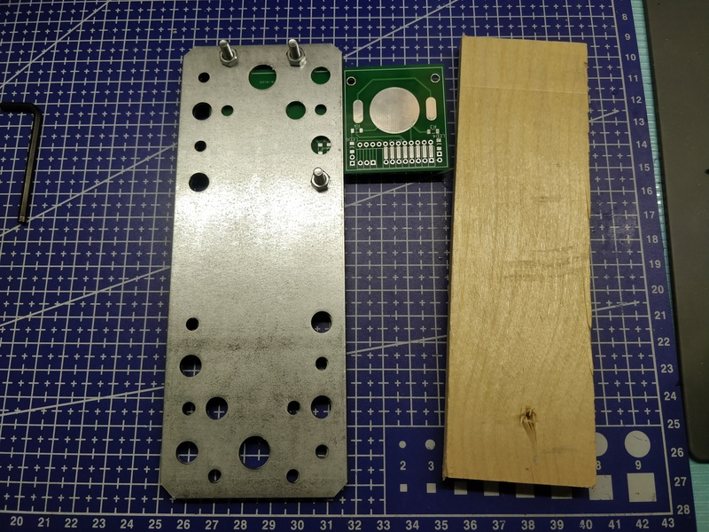
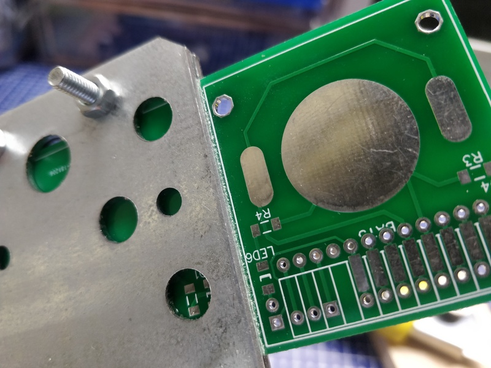
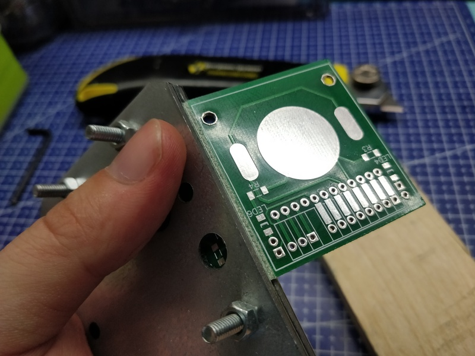

Простое приспособление для разделения печатных плат

Как я уже писал в прошлом посте, я зимой получил горсть печатных плат. Есть такой сервис, как JLCPCB, который дёшево производит печатные платы хорошего качества. Есть только одно но - минимальный заказ 10 штук и платы должны быть не больше, чем 10*10 сантиметров. Но дело в том, что на площади в 10*10 сантиметров порою можно разместить множество небольших плат для различных устройств. Есть различные способы разделения плат. Можно заказать пропил между платами, можно прокатку (между платами делается ложбинка, по которой их можно разломить), но когда у тебя на руках уже есть две платы на одном куске текстолита, которые нужно разделить, на помощь приходит старый дедовский способ - стальная линейка и канцелярский нож.
У данного способа есть очевидные недостатки. Во-первых, стальная линейка достаточно тонкая, а во-вторых - достаточно гладкая. Поэтому в процессе реза её можно случайно сдвинуть или нож может уйти в сторону, потому что каждый раз, когда я пытался прорезать в плате углубление, я боялся, что при достаточно сильном давлении в сторону руки, которая держит линейку, нож сорвётся и выскочит на линейку. Одним словом, есть опасность повредить руку. И, кажется, я нашёл метод, с помощью которого можно усовершенствовать данный способ, используя гуано и веточки легкодоступные и дешёвые ресурсы.
Для этого понадобится кусочек фанеры, две крепёжные пластины, несколько болтов и гаек. Единственное условие - крепёжные пластины должны быть ровными, рез пластин - перпендикулярно их плоскости, а грани пластин должны совпадать при совмещении крепёжных отверстий. Далее принцип очевиден - зажимаем ту часть платы, которую нужно отделить между двумя пластинами, стягиваем болтами, используя подходящие отверстия. стороны пластин должны проходить по линии реза. Далее кладём незажатую часть платы на кусок фанеры и прорезаем с нажимом канцелярским ножом несколько раз с каждой стороны. Если гайки хорошо затянуты, то лезвие ножа пройдёт точно по одной и той же линии. На обеих сторонах платы линии реза будут располжены точно друг под другом. Толщина пластины обычно от полутора до двух миллиметров, что даёт возможность приложить достаточное боковое усилие, чтобы нож не уходил с линии реза и в то же время риск повреждения руки был минимальным.



После разделения платы на части, торцы можно зачистить напильником или наждачной бумагой.